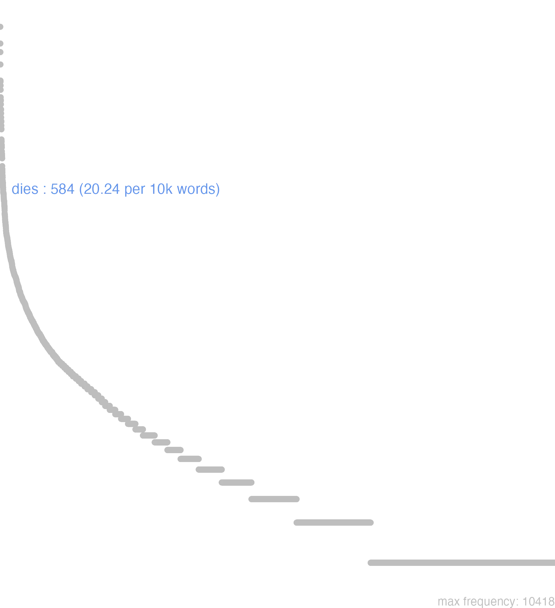

42 dies
42.0.0.1 bases lexicais
id: http://lila-erc.eu/data/id/lemma/99334
classe: substantivo comum de dois gêneros
paradigma: 5ª declinação (tema em -e-)
outras grafias: diaes
variantes do lema:
no data
dĭēs
dĭeī
42.0.0.2 dicionários tradicionais
diē
gen. e dat. arc. de dies.
1 diēs -ēī
subs. m. e f. no pl. quase sempre m.
Obs.: o gênero masculino, que é muito mais frequente no pl., também predomina no sing. Gen. arc. dies Lucr. 4, 1.083; dii Verg. En. 1,636; Cíc. Rosc. 131; die Verg. G. 1, 208. Dat. die A. Gel. 9,14,21.
antigo locat. de dies.
Obs.: Usado unicamente na expressão noctu diuque e em interdiu. Só apareee nos escritores arcaicos ou arcaizantes.
gen. e dat. arc. de dies.
1 diēs -ēī
subs. m. e f. no pl. quase sempre m.
Obs.: o gênero masculino, que é muito mais frequente no pl., também predomina no sing. Gen. arc. dies Lucr. 4, 1.083; dii Verg. En. 1,636; Cíc. Rosc. 131; die Verg. G. 1, 208. Dat. die A. Gel. 9,14,21.
1 I-Sent. próprio Dia em oposição à noite, espaço de tempo desde o nascer atá ao pôr do sol T. Lív. 22, 1,20; Ov. Met. 13, 677.
2 I-Sent. próprio Dia espaço de 24 horas. de meia-noite a meia-noite Cés. B. Gal. 1, 16,4.
3 II-Daí: Dia unidade de tempo, ocasião, data fixada Cés. B. Gal. 1, 42, 3.
4 II-Daí: Duração, sucessão do tempo, tempo, demora Cés. B. Gal. 1, 7, 6.
5 II-Daí: Dia do nascimento, morte, etc. Cíc. At. 13, 42, 2.
6 II-Daí: Dia de caminho, jornada T. Lív. 38, 59, 6.
7 II-Daí: Dia, acontecimento memorável Cíc. Fam. 1,2,3.
8 II-Daí: Luz do dia, dia Plín. H. N at. 33, 70.
9 II-Daí: Clima, temperatura, ar, céu Plín. H. Nat. 2, 115.
antigo locat. de dies.
Obs.: Usado unicamente na expressão noctu diuque e em interdiu. Só apareee nos escritores arcaicos ou arcaizantes.
1 Durante o dia Sal. B. Jug. 38, 3.
2 Diī
gen. dat. v. dies 1.
no data
Dies -ei
m. f. sing. m. plur.
m. f. sing. m. plur.
1 Cic. dia.
2 tempo.
[EXEMPLOS]
X
die caeca emere Plaut Comprar fiado
die oculata Plaut Comprar com dinheiro á vista
diem fungi Plaut Morrer
diem obire Cic Morrer
diem supremum explere Tac Morrer
Dies -ei
Vide Crastinus.
Vide Crastinus.
1 o dia dubij generis, sed in plurali masc. tantùm:
2 pro tempore indeterminato foem.
[EXEMPLOS]
X
dies critici uel crisimi dias, em que os Medicos julgaõ das doenças à Crisis, id est, judicium
dies Lunae 2. feira
dies Solis Domingo
iouis 5. feira
martis 3. feira
mercurii 4. feira
saturni Sabbado
ueneris 6. feira
Dies -ei
1 ho dia
Diu1 de dia
42.0.0.3 dados de corpus
![This chart plots collocate by scoreSUBST, for the headword dies here are all the values plotted: collocate: ante2; scoreSUBST: 0. collocate: hodiernus; scoreSUBST: 0. collocate: paucus; scoreSUBST: 0. collocate: ante; scoreSUBST: 0. collocate: post; scoreSUBST: 0. collocate: nox; scoreSUBST: 2. collocate: tertius; scoreSUBST: 0. collocate: hesternus; scoreSUBST: 0. collocate: festus; scoreSUBST: 0. collocate: quintus2; scoreSUBST: 0. collocate: ille; scoreSUBST: 0. collocate: post2; scoreSUBST: 0. collocate: posterus; scoreSUBST: 0. collocate: autem; scoreSUBST: 0. collocate: singulus; scoreSUBST: 0. collocate: septimus; scoreSUBST: 0. collocate: quinque; scoreSUBST: 0. collocate: is; scoreSUBST: 0. collocate: superus; scoreSUBST: 0. collocate: iam; scoreSUBST: 0. collocate: ipse; scoreSUBST: 0. collocate: unus; scoreSUBST: 0. collocate: totus; scoreSUBST: 0. collocate: idem; scoreSUBST: 0. collocate: interpono; scoreSUBST: 0. collocate: cum; scoreSUBST: 0. collocate: primum; scoreSUBST: 0. collocate: Caesar; scoreSUBST: 0. collocate: Roma; scoreSUBST: 0. collocate: prope2; scoreSUBST: 0. collocate: uiginti; scoreSUBST: 0. collocate: decem; scoreSUBST: 0. collocate: quartus; scoreSUBST: 0. collocate: spatium; scoreSUBST: 2. collocate: reuertor; scoreSUBST: 0. collocate: laetus; scoreSUBST: 0. collocate: consequor; scoreSUBST: 0. collocate: longus; scoreSUBST: 0. collocate: constituo; scoreSUBST: 0](./Media/wordcloud__xx100-105-101-115xx__BY_collocate_scoreSUBST.webp)
![This chart plots collocate by scoreADJ, for the headword dies here are all the values plotted: collocate: ante2; scoreADJ: 0. collocate: hodiernus; scoreADJ: 5. collocate: paucus; scoreADJ: 0. collocate: ante; scoreADJ: 0. collocate: post; scoreADJ: 0. collocate: nox; scoreADJ: 0. collocate: tertius; scoreADJ: 3. collocate: hesternus; scoreADJ: 3. collocate: festus; scoreADJ: 3. collocate: quintus2; scoreADJ: 3. collocate: ille; scoreADJ: 0. collocate: post2; scoreADJ: 0. collocate: posterus; scoreADJ: 3. collocate: autem; scoreADJ: 0. collocate: singulus; scoreADJ: 2. collocate: septimus; scoreADJ: 2. collocate: quinque; scoreADJ: 0. collocate: is; scoreADJ: 0. collocate: superus; scoreADJ: 0. collocate: iam; scoreADJ: 0. collocate: ipse; scoreADJ: 0. collocate: unus; scoreADJ: 0. collocate: totus; scoreADJ: 0. collocate: idem; scoreADJ: 0. collocate: interpono; scoreADJ: 0. collocate: cum; scoreADJ: 0. collocate: primum; scoreADJ: 0. collocate: Caesar; scoreADJ: 0. collocate: Roma; scoreADJ: 0. collocate: prope2; scoreADJ: 0. collocate: uiginti; scoreADJ: 0. collocate: decem; scoreADJ: 0. collocate: quartus; scoreADJ: 2. collocate: spatium; scoreADJ: 0. collocate: reuertor; scoreADJ: 0. collocate: laetus; scoreADJ: 2. collocate: consequor; scoreADJ: 0. collocate: longus; scoreADJ: 2. collocate: constituo; scoreADJ: 0](./Media/wordcloud__xx100-105-101-115xx__BY_collocate_scoreADJ.webp)
![This chart plots collocate by scoreVERBO, for the headword dies here are all the values plotted: collocate: ante2; scoreVERBO: 0. collocate: hodiernus; scoreVERBO: 0. collocate: paucus; scoreVERBO: 0. collocate: ante; scoreVERBO: 0. collocate: post; scoreVERBO: 0. collocate: nox; scoreVERBO: 0. collocate: tertius; scoreVERBO: 0. collocate: hesternus; scoreVERBO: 0. collocate: festus; scoreVERBO: 0. collocate: quintus2; scoreVERBO: 0. collocate: ille; scoreVERBO: 0. collocate: post2; scoreVERBO: 0. collocate: posterus; scoreVERBO: 0. collocate: autem; scoreVERBO: 0. collocate: singulus; scoreVERBO: 0. collocate: septimus; scoreVERBO: 0. collocate: quinque; scoreVERBO: 0. collocate: is; scoreVERBO: 0. collocate: superus; scoreVERBO: 0. collocate: iam; scoreVERBO: 0. collocate: ipse; scoreVERBO: 0. collocate: unus; scoreVERBO: 0. collocate: totus; scoreVERBO: 0. collocate: idem; scoreVERBO: 0. collocate: interpono; scoreVERBO: 2. collocate: cum; scoreVERBO: 0. collocate: primum; scoreVERBO: 0. collocate: Caesar; scoreVERBO: 0. collocate: Roma; scoreVERBO: 0. collocate: prope2; scoreVERBO: 0. collocate: uiginti; scoreVERBO: 0. collocate: decem; scoreVERBO: 0. collocate: quartus; scoreVERBO: 0. collocate: spatium; scoreVERBO: 0. collocate: reuertor; scoreVERBO: 2. collocate: laetus; scoreVERBO: 0. collocate: consequor; scoreVERBO: 2. collocate: longus; scoreVERBO: 0. collocate: constituo; scoreVERBO: 2](./Media/wordcloud__xx100-105-101-115xx__BY_collocate_scoreVERBO.webp)
![This chart plots collocate by scoreADV, for the headword dies here are all the values plotted: collocate: ante2; scoreADV: 4. collocate: hodiernus; scoreADV: 0. collocate: paucus; scoreADV: 0. collocate: ante; scoreADV: 0. collocate: post; scoreADV: 0. collocate: nox; scoreADV: 0. collocate: tertius; scoreADV: 0. collocate: hesternus; scoreADV: 0. collocate: festus; scoreADV: 0. collocate: quintus2; scoreADV: 0. collocate: ille; scoreADV: 0. collocate: post2; scoreADV: 2. collocate: posterus; scoreADV: 0. collocate: autem; scoreADV: 0. collocate: singulus; scoreADV: 0. collocate: septimus; scoreADV: 0. collocate: quinque; scoreADV: 0. collocate: is; scoreADV: 0. collocate: superus; scoreADV: 0. collocate: iam; scoreADV: 2. collocate: ipse; scoreADV: 0. collocate: unus; scoreADV: 0. collocate: totus; scoreADV: 0. collocate: idem; scoreADV: 0. collocate: interpono; scoreADV: 0. collocate: cum; scoreADV: 0. collocate: primum; scoreADV: 2. collocate: Caesar; scoreADV: 0. collocate: Roma; scoreADV: 0. collocate: prope2; scoreADV: 0. collocate: uiginti; scoreADV: 0. collocate: decem; scoreADV: 0. collocate: quartus; scoreADV: 0. collocate: spatium; scoreADV: 0. collocate: reuertor; scoreADV: 0. collocate: laetus; scoreADV: 0. collocate: consequor; scoreADV: 0. collocate: longus; scoreADV: 0. collocate: constituo; scoreADV: 0](./Media/wordcloud__xx100-105-101-115xx__BY_collocate_scoreADV.webp)
![This chart plots collocate by scoreFUNC, for the headword dies here are all the values plotted: collocate: ante2; scoreFUNC: 0. collocate: hodiernus; scoreFUNC: 0. collocate: paucus; scoreFUNC: 0. collocate: ante; scoreFUNC: 20. collocate: post; scoreFUNC: 20. collocate: nox; scoreFUNC: 0. collocate: tertius; scoreFUNC: 0. collocate: hesternus; scoreFUNC: 0. collocate: festus; scoreFUNC: 0. collocate: quintus2; scoreFUNC: 0. collocate: ille; scoreFUNC: 0. collocate: post2; scoreFUNC: 0. collocate: posterus; scoreFUNC: 0. collocate: autem; scoreFUNC: 0. collocate: singulus; scoreFUNC: 0. collocate: septimus; scoreFUNC: 0. collocate: quinque; scoreFUNC: 0. collocate: is; scoreFUNC: 0. collocate: superus; scoreFUNC: 0. collocate: iam; scoreFUNC: 0. collocate: ipse; scoreFUNC: 0. collocate: unus; scoreFUNC: 0. collocate: totus; scoreFUNC: 0. collocate: idem; scoreFUNC: 0. collocate: interpono; scoreFUNC: 0. collocate: cum; scoreFUNC: 20. collocate: primum; scoreFUNC: 0. collocate: Caesar; scoreFUNC: 0. collocate: Roma; scoreFUNC: 0. collocate: prope2; scoreFUNC: 20. collocate: uiginti; scoreFUNC: 0. collocate: decem; scoreFUNC: 0. collocate: quartus; scoreFUNC: 0. collocate: spatium; scoreFUNC: 0. collocate: reuertor; scoreFUNC: 0. collocate: laetus; scoreFUNC: 0. collocate: consequor; scoreFUNC: 0. collocate: longus; scoreFUNC: 0. collocate: constituo; scoreFUNC: 0](./Media/wordcloud__xx100-105-101-115xx__BY_collocate_scoreFUNC.webp)
![This charts plots the frequency of lemma by author_Frequencies. The Caesar subcorpus registers the highest normalized frequency, with the value of 38.14 and an absolute frequency of 101. The Vergilius subcorpus follows, with a normalized frequency of 7.72 and an absolute frequency of 4. the subcorpus with the least normalized frequency is Suetonius with the normalized value of 0 and an absolute freqeuncy of 0. here are all the values: subcorpus: Caesar ; normalized frequency: 101 ; absolute frequency: 38.1448749905582. subcorpus: Cicero ; normalized frequency: 329 ; absolute frequency: 20.4953776382348. subcorpus: Horatius ; normalized frequency: 12 ; absolute frequency: 10.6562472249356. subcorpus: Ovidius ; normalized frequency: 3 ; absolute frequency: 5.14756348661633. subcorpus: Phaedrus ; normalized frequency: 5 ; absolute frequency: 7.59070897221801. subcorpus: Sallustius ; normalized frequency: 16 ; absolute frequency: 14.8409238475095. subcorpus: Seneca ; normalized frequency: 98 ; absolute frequency: 18.2900655082959. subcorpus: Suetonius ; normalized frequency: 0 ; absolute frequency: 0. subcorpus: Tacitus ; normalized frequency: 6 ; absolute frequency: 20.5973223480947. subcorpus: Vergilius ; normalized frequency: 4 ; absolute frequency: 7.72200772200772. subcorpus: Hieronymus ; normalized frequency: 10 ; absolute frequency: 22.4668613794653](./Media/barchart__xx100-105-101-115xx__lemma_BY_author_Frequencies.webp)
![This charts plots the frequency of lemma by genre_Frequencies. The Prosa.epistolográfica subcorpus registers the highest normalized frequency, with the value of 33.12 and an absolute frequency of 125. The Prosa.histórica subcorpus follows, with a normalized frequency of 29.94 and an absolute frequency of 123. the subcorpus with the least normalized frequency is Poesia.didática with the normalized value of 6.79 and an absolute freqeuncy of 8. here are all the values: subcorpus: Prosa.histórica ; normalized frequency: 123 ; absolute frequency: 29.9423062878843. subcorpus: Prosa.filosófica ; normalized frequency: 92 ; absolute frequency: 15.1562577222781. subcorpus: Prosa.oratória ; normalized frequency: 189 ; absolute frequency: 18.1463808051616. subcorpus: Prosa.epistolográfica ; normalized frequency: 125 ; absolute frequency: 33.1222342934365. subcorpus: Poesia.lírica ; normalized frequency: 12 ; absolute frequency: 10.0950618322537. subcorpus: Poesia.didática ; normalized frequency: 8 ; absolute frequency: 6.78598693697515. subcorpus: Poesia.trágica ; normalized frequency: 21 ; absolute frequency: 18.2418346073662. subcorpus: Poesia.épica ; normalized frequency: 4 ; absolute frequency: 7.72200772200772. subcorpus: Prosa.ficcional ; normalized frequency: 10 ; absolute frequency: 22.4668613794653](./Media/barchart__xx100-105-101-115xx__lemma_BY_genre_Frequencies.webp)
![This charts plots the frequency of lemma by period_Frequencies. The IV.d.C. subcorpus registers the highest normalized frequency, with the value of 22.47 and an absolute frequency of 10. The I.a.C. subcorpus follows, with a normalized frequency of 21.5 and an absolute frequency of 462. the subcorpus with the least normalized frequency is II.d.C. with the normalized value of 15.71 and an absolute freqeuncy of 6. here are all the values: subcorpus: I.a.C. ; normalized frequency: 462 ; absolute frequency: 21.5033744472888. subcorpus: I.d.C. ; normalized frequency: 106 ; absolute frequency: 16.2153893223191. subcorpus: II.d.C. ; normalized frequency: 6 ; absolute frequency: 15.7068062827225. subcorpus: IV.d.C. ; normalized frequency: 10 ; absolute frequency: 22.4668613794653](./Media/barchart__xx100-105-101-115xx__lemma_BY_period_Frequencies.webp)
ille sic dies
Cic.Att.5.1.3
Assim aquele dia. [JDD]
festus dies est
Sen.Ag.791
É dia de festa. [JDD]
detrimentum iam dies sensit
Sen.Ep.122.1
O dia já sente sua perda. [JDD]
redde iam mundo diem
Sen.Ag.56
Devolve já ao mundo o dia. [JDD]
aegre eo die sustentatum est
Caes.Gal.2.6.1
Com dificuldade ela se defendeu nesse dia. [JDD]
ex Sicilia septimo die Romam
Cic.Att.2.1.5
“Da Sicília a Roma em sete dias. [JDD]
singuli dies aliquid subtrahunt uiribus
Sen.Ep.26.4
cada dia nos retira alguma força.” [JDD]
Spatium diei noctis excipiunt vices .
Phaed.2.8
A vez da noite toma o lugar do dia. [JDD]
unus autem dies gradus uitae est
Sen.Ep.12.6
E um dia é um degrau da vida. [JDD]
eodem die ubi luserunt nauigia sorbentur
Sen.Ep.4.7
no mesmo dia em que navios se divertiram, são engolidos. [JDD]
quam dissimilis hic dies illi tempori uidebatur
Cic.Ver.2.4.77.11
Quão diferente lhes parecia este dia daquele momento! [JDD]
licet enim sine luxuria agere festum diem
Sen.Ep.18.4
pode-se, pois, passar o dia de festa sem libertinagem. [JDD]
postero die castra ex eo loco mouent
Caes.Gal.1.15.1
No dia seguinte, levantam acampamento daquele posto. [JDD]
at mehercules nullus agenti dies longus est
Sen.Ep.122.3
Mas, por hércules, para quem é ativo nenhum dia é longo. [JDD]
kalendas Decembris eo die ipse non adfuit
Cic.Phil.3.19.3
nesse dia ele próprio não compareceu. [JDD, de outra edição]
quo senatus die laetior quo populus Romanus
Cic.Phil.1.32.1
Em que dia esteve o senado mais feliz, em que dia o povo romano. [JDD]
venient autem dies cum auferetur ab eis sponsus
Vulg.Marc.2.20
Dias virão, porém, em que o noivo será arrancado deles [JDD]
dies conloquio dictus est ex eo die quintus
Caes.Gal.1.42.3
Foi marcado para a conversação o quinto dia a partir desse dia. [JDD]
post diem tertium gesta res est quam dixerat
Cic.Mil.44
Três dias depois que ele tinha dito, a coisa se deu. [JDD]
et ait illis illa die cum sero esset factum
Vulg.Marc.4.35
E lhes disse naquele dia, quando se fez noite. [JDD]
quanto ille plura miscebat tanto hic magis in dies conualescebat
Cic.Mil.25
Quanto mais coisas ele [Clódio] agitava, mais este [Milão] se fortalecia a cada dia. [JDD]
unius autem diei quot et quantae uirtutes di immortales fuerunt
Cic.Phil.14.25.8
Por outro lado, quantos e quão grandes virtudes, deuses imortais, houve em um só dia! [JDD]
hic a. d. iii Idus Octobr magnum numerum hostium occidimus
Cic.Att.5.20.3
Aqui, no terceiro dia antes dos idos de outubro [13 de outubro], matamos um grande número de inimigos. [JDD, de outra edição]
quapropter Quirites exspectate legatorum reditum et paucorum dierum molestiam deuorate
Cic.Phil.6.17.1
Por causa disso, Quirites, esperai o regresso dos legados e aguentai essa moléstia de uns poucos dias. [JDD]
ibi dies quinque morati direpto et vastato Amano inde discessimus
Cic.Att.5.20.3
Tendo demorado ali cinco dias, saqueado e devastado o Amano, retiramo-nos dali. [JDD]
eodem die legati ab hostibus missi ad Caesarem de pace uenerunt
Caes.Gal.4.36.1
No mesmo dia legados enviados pelos inimigos vieram a César acerca da paz. [JDD]
eo si ante eam diem non veneris Romae te fortasse videbo
Cic.Att.2.11.1
Por isso, se não vieres até esse dia, te verei talvez em Roma. [JDD]
hodierno autem die spe nescio qua eis obiecta remissior senatus fuit
Cic.Phil.6.3.4
No dia de hoje, porém, apresentada não sei que esperança de paz, o senado foi mais frouxo. [JDD, de outra edição]
sed ut finem epistulae inponam accipe quod mihi hodierno die placuit
Sen.Ep.4.10
Mas para pôr um fim à carta, acolhe isto que me agradou no dia de hoje [JDD]
cum tot edicta proposuisset edixit ut adesset senatus frequens a. d. VIII
Cic.Phil.3.19.1
Depois de ter proposto tantos editos, ordenou que o senado se apresentasse cheio no oitavo dia antes das calendas de dezembro [24 de novembro] [JDD, de outra edição]
rex primo nihil metuere nihil suspicari dies unus alter plures non referri
Cic.Ver.2.4.66.1
66 O rei no início nada temia, nada suspeitava; um dia, outro, mais, não era devolvido. [JDD]
diebus decem quibus materia coepta erat comportari omni opere effecto exercitus traducitur
Caes.Gal.4.18.1
Concluída a obra em dez dias, desde aquele em que a madeira tinha começado a ser transportada, o exército é conduzido para o outro lado. [JDD, de outra edição]
quid tandem erat causae cur die hesterno in senatum tam acerbe cogerer
Cic.Phil.1.11.5
Que motivo havia afinal para que no dia de ontem eu fosse obrigado com tanto rigor a ir ao senado? [JDD]
his rebus gestis ex litteris Caesaris dierum uiginti supplicatio ab senatu decreta est
Caes.Gal.4.38.5
Por esses feitos, em vista das cartas de César, foi decretada pelo senado uma ação de graça de vinte dias. [JDD, de outra edição]
tu si ut scribis Kal Iuniis Roma profectus es prope diem nos videbis
Cic.Att.3.9.3
Se, como escreves, tu partiste de Roma nas calendas de junho [1º. de junho] logo nos verás [JDD, de outra edição]
hac re ad consilium delata ubi omnes idem sentire intellexit posterum diem pugnae constituit
Caes.Gal.3.23.8
Levado esse assunto a uma assembleia, onde entendeu que todos pensavam o mesmo, determinou o dia seguinte para a luta. [JDD]
malui uiginti diebus post sententiam meam laudari ab omnibus quam a paucis hodie uituperari
Cic.Phil.6.16.10
Preferi que o meu parecer fosse louvado por todos vinte dias mais tarde a que fosse criticado por poucos hoje. [JDD]
interrogas quomodo haec animo prauitas fiat auersandi diem et totam uitam in noctem transferendi
Sen.Ep.122.5
Perguntas como ocorre para o espírito esta deformidade de sentir aversão pelo dia e de tranferir a vida inteira para a noite? [JDD]
quartum idus Ianuarias foedum imbribus diem tonitrua et fulgura et caelestes minae ultra solitum turbauerunt
Tac.Hist.1.18.1
No quarto dia antes dos idos de janeiro [10 de janeiro], perturbaram um dia feio de chuva trovões, raios e ameaças do céu além do costume. [JDD]
legati haec se ad suos relaturos dixerunt et re deliberata post diem tertium ad Caesarem reuersuros
Caes.Gal.4.9.1
Os legados disseram que relatariam isso ao seus e, deliberado o assunto, retornariam a César após o terceiro dia. [JDD]
dies intermissus aut nox interposita saepe perturbat omnia et totam opinionem parua non numquam commutat aura rumoris
Cic.Mur.35
Um dia intercalado ou uma noite interposta muitas vezes perturba tudo e um pequeno sopro de rumor às vezes muda totalmente a opinião. [JDD]
decerno igitur eorum trium nomine quinquaginta dierum supplicationes causas ut honorificentissimis uerbis consequi potuero complectar ipsa sententia
Cic.Phil.14.29.1
Proponho, portanto, ações de graça de cinquenta dias em nome dos três: os motivos, como eu puder conseguir nos termos mais honoríficos, desenvolverei no próprio parecer. [JDD]
felices ter et amplius quos inrupta tenet copula nec malis diuolsus querimoniis suprema citius soluet amor die
Hor.Carm.1.13.17
Três e mais vezes felizes aqueles aos quais uma união indissolúvel mantém juntos e aos quais não separará antes do supremo dia o amor desfeito por funestas queixas. [JDD]
ille quidem fructum omnis ante actae uitae hodierno die maximum cepit cum summo consensu senatus tum iudicio tuo grauissimo et maximo
Cic.Marc.3
Ele, na verdade, recebeu no dia de hoje o maior fruto de toda sua vida já passada, não só pelo total consenso do senado, mas também pelo teu julgamento gravíssimo e supremo. [JDD]
42.0.0.4 Diagrama de Zipf
